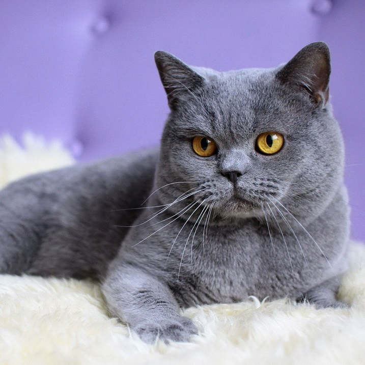

Британская порода кошек

Круглая мордашка
Черепаховый окрас
Большие глаза
Активность 24/7
Британские короткошёрстные — короткошёрстные кошки. Как правило, это сильные и крепкие кошки. Бывают от средних до крупных размеров. Согласно легенде, являются потомками Чеширского кота.
Краткие сведения
- одна из самых популярных пород кошек в России;
- независимые, упрямые и очень умные;
- легко переносят одиночество, подходят для занятых людей;
- взрослые животные не слишком активны, они сдержанны и спокойны.
Характер
Британская короткошерстная кошка — идеальный домашний питомец для тех, кто любит покой и тишину. Представители этой породы — настоящие английские аристократы, которые ни за что не позволят себе слишком активных игр и пустого бега по квартире.
Взрослый британец — образец серьезности, независимости и сдержанности. Вместе с тем котята этой породы достаточно активны и любопытны, поэтому нуждаются в воспитании с самого рождения.
Несмотря на независимость, британская короткошерстная кошка требует к себе внимания. И жестоко наказывает владельца, который не уделяет ей такового. С британцем необходимо играть, разговаривать и, конечно, ласкать и гладить. Но делать это стоит только тогда, когда у кошки будет настроение. Иначе бестактное поведение может быть расценено как попытка нарушить устоявшиеся правила общения и личное пространство питомца.
Чистокровный британец очень хорошо уживается с другими животными, в том числе с собаками, благодаря уравновешенности характера и интеллекту. Эти кошки отлично ладят с детьми, и, если в семье есть ребенок, вероятнее всего, именно к нему британец будет относиться лояльнее всех.
Уход
Достоинство британцев — их шуба, густая и мягкая. Это благодаря тому, что шерсть и подшерсток у них одинаковой длины. Чтобы сохранить ее прекрасный вид, необходимо ежедневно вычесывать кошку с помощью специальных щеток с натуральной щетиной. В период линьки регулярность расчесывания увеличивают до двух раз в день. Британские кошки этот процесс любят, причем даже не сопротивляются при движении против шерсти.